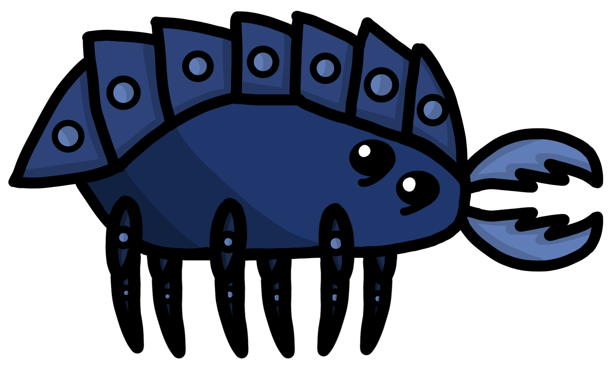
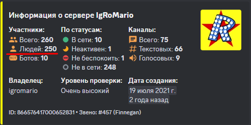
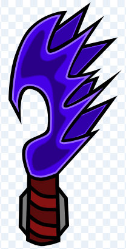

# ☭ IgroNews выпуск № 12☭ #
Доброго времени суток, товарищ читатель газеты сервера IgRoMario Новости вновь возобновляют свою работу, после последних потрясений на сервере, но уже немного в другом формате. Но об этом дальше...
## Новости по газете ##
--- Когда было сказано, что газета начнет выходить в другом формате, это не значит, что новости по итогам недели перестанут выходить. Совсем наоборот, они продолжат выходить, но при этом будет добавлен тестовый самостоятельный раздел газеты: журнал "Дружба", в течении недели (1-2 раза) в нем будут публиковаться развлекательные программы: новости о мелких событиях сервера, а так же лучшие объекты творчества за определенный период. Не исключено добавление разного рода загадок и анекдотов как связанные с сервером, так и взятые с интернета. Предполагается использование некоторых текстов из интернета. Посмотрим как приживется подобное решение и посилят ли репортеры такую нагрузку.
--- Внешний вид самих статей претерпит изменения. Теперь все будет отправляться одним репортером, с указанием всех, кто принимал участие в написании газеты. Вместо отправления сообщения, самими участниками, их слова будут цитироваться, тем самым статья не будет состоять из нескольких участников.
# А теперь итоги прошедшего времени #
## Что было? ##
С середины июля до конца августа, наш сервер подвергнулся атакам рейдера с ником Paeer. Взламывались участники, но преимущественно чиновники, чтобы нанести максимальный вред серверу.
После взлома товарища Ромарио, на сервере были удалены абсолютно все каналы, добрая доля ролей, а самое неприятное то, что пострадали более 60-ти невинных мирных участников, которых в ходе взлома выгнали с сервера от имени создателя.
Как только нашелся способ защиты от взломов, началось восстановление нашего сервера, серверов-союзников и внутренней организации союза.
После подписания мира в начале сентября, сервер возвращается к мирной жизни.
В боях, проявлялись истинные качества каждого. Кто то заботился о товарищах, в атаке, кто то тщательно искал пути защиты от взломов, но все это можно назвать так: Вели себя как настоящие друзья и товарищи! Предлагаю прослушать песню на данную тему:
## Их больше нет? ##
В начале октября поступила информация, что сервер Орион, известный в народе как сервер участника Сано, организовали Союз Независимых Серверов (СНС), в противовес нашему объединению. Это было воспринято с нашей стороны как прямая угроза, из за чего товарищ Ромарио отправился на переговоры с Сано, дабы узнать и спросить почему они это сделали.
Ситуация серьезно накалялась, все клонило к возможности новой войны. Основные претензии были по поводу шпионажа и нашим стремлением украсть их игру и выдать за свою. Это не было правдой, но верить нам не хотели до последнего. Тогда Ромарио обговорив с союзниками и подготовив речь, написал от лица всего Союза Объединенного Комьюнити, что мы обрываем с ним всякий контакт, во-избежании новых конфликтов и в качестве опровержения их слов о нашем желании "поживиться" их игрой.
## Хм... Такое возможно? ##
В конце октября с сервера Сано к нам пришел человек под именем Гном Гномович с угрозами в наш адрес. Как оказалось позже, ранее он не знал наших серверов, был простым участником, а судил о нас по слухам с сервера Орион, которые небыли утешительными. После переговоров с нашими чиновниками, он понял, что ошибся, извинился и покинул сервер Сано. Мы приняли его в наш мир.
Как только Гном вступил на сервер игромарио, так сразу начал вникать в его механики и даже изъявил желание вступить в ряды чиновников, куда доступ не был ограничен. Он сразу предложил идею, которая в будущем была реализована, а это уже прямой путь в чины. Сейчас он находится на 2 из 5 званий сервера - низкий чин.
Вот так, еще недавно был врагом, а сейчас уже почетный человек. Эта ситуация наглядно показывает, как доброе отношение к человеку может привести к хорошему исходу.
На этом все. Благодарим вас за прочтение, желаем легко провести оставшуюся часть недели и увидимся в новых выпусках, товарищи!
Репортеры, работавшие над газетой: RoMario
19.11.2023г
# ☭ Журнал "Дружба" выпуск 1 ☭ #
Здравствуйте уважаемые читатели нового журнала в газете нашего сервера. Сегодня будут затронуты несколько тем, которые являются достаточно важными как для дискорд сервера, так и для каждого из нас.
# Микро новости #
## Замена оформления ##
20 ноября была реализована идея, товарища Грей кет, по смене эмодзи в канале 🌌идеи-орион🌌 и 🌀секреты-орион🌀 так, чтобы они не были похожи и максимально снизить вероятность перепутать эти каналы.
## Добавление оформления ##
На 48-ом съезде партии сервера Игромарио, товарищем Термоядерный кабан, была высказана мысль о добавлении хоть каких то эмодзи в наименованиях каналов ➕добавление-игры-в-канал-модов➕ и 🔨моды-на-игры🔨 . Его слова были услышаны и 21 ноября была реализована идея, предложенная товарищем Ромарио о добавлении в заголовки каналов ➕добавление-игры-в-канал-модов➕ и 🔨моды-на-игры🔨 эмодзи, которые вы можете наблюдать сейчас.
## Поэтический уголок ##
Кто для вас люди? Готовы ли вы идти по головам, ради своей цели, сшибая все на своем пути, или проявите чуткость и подадите руку помощи тем, кто в этом нуждается? Во время размышления, предлагаю прочитать произведение товарища Екры, напечатанное в канале "народное слово", под названием "История игрока в Rust":
__История игрока в Rust__
Жил-был игрок в мире Rust. Он был новичком, только что попавшим на остров без какого-либо обмундирования или оружия. Его единственная цель - выжить и установить свое присутствие на этой суровой и опасной земле.
После бездельничества на пляже, новичок отправился исследовать окружающую местность. Но скоро он понял, что мир Rust не является местом, где можно просто прогуляться и насладиться видами. Везде была опасность - голодные животные, бандиты, другие игроки, жаждущие его ресурсов.
С первым налетом врага игрок был ошеломлен. Его база была разграблена, все его ресурсы были украдены. Но вместо того, чтобы опустить руки, он понял, что в Rust нет места для слабых. Он решил, что ему нужно стать сильнее.
Он начал строить укрепления, собирать ресурсы и создавать ловушки для тех, кто решил причинить ему вред. Он изучил технологии и нашел способы создания мощного оружия. Постепенно, новичок становился сильнее и опытнее, неся справедливость и защищая свои интересы.
Однако, с каждым успехом приходил колоссальный риск. Время от времени его охотниками становились группы опытных игроков, стремящихся взять все, что у него есть. Но новичок не сдавался. Он научился быть предельно осторожным и использовать хитрость в своих интересах.
Так продолжалось несколько месяцев, когда однажды новичку удалось построить огромное фортификационное сооружение. Он стал известен своей силой и неумолимостью. Однако, будучи на вершине, он понял, что стал диким, жестоким и безразличным к остальным.
И именно тогда он понял настоящую ценность этого мира - сотрудничество. Он прекратил нападать на других игроков и начал помогать новым игрокам, поделившись знаниями и ресурсами. Он стал командиром небольшой группы выживших, обучая их и создавая безопасные зоны для всех.
Эта история о том, как один игрок изменился в ходе своего пути в Rust. Он нашел баланс между силой и добротой, понял, что игра не только о том, чтобы выжить, но и о сближении с другими людьми.
Как писал сам автор, объясняя главную мысль истории, "История игрока в Rust наводит на мысль о том, что в реальной жизни важно понять, что сила и эгоизм не являются единственными путями к успеху. Самая настоящая победа приходит, когда мы находим способ помогать другим и сотрудничаем для достижения общих целей."
Лучший арт
Перед вами работа, товарища Ярика. Этот арт набрал наибольшее количество лайков за последние 2 месяца. Здесь изображен синий жук из игры орион.
Колонка юмора
А вы знали, что нечестная игра в орион вызывает рак мозга и лучевую болезнь? Именно к таким результатам пришли участники нашего сервера в процессе игры.
Симптомы:
- вы становитесь неспособны к прямому столкновению с любым боссом в игре
- наблюдается легкая потеря здравой мысли, из за чего вы можете не справиться с самыми легкими задачами.
Лучший способ лечения - отказаться от всех элементов нечестной игры и пройти орион, используя в боях только затупленную землю.
На этом вещание первого выпуска журнала "дружба" подходит к концу. Всем спасибо за прочтение, оставайтесь с нами и ждите новых выпусков. Всегда помогайте друг другу и оставайтесь людьми.
Репортеры, работавшие над газетой: RoMario, Термоядерный Кабан
22.11.2023г
# ☭ IgroNews выпуск № 13 ☭ #
Здравствуйте, уважаемые читатели газеты нашего сервера. Вас приветствует новый, 13-ый выпуск новостей по итогам недели.
## ИТОГИ НЕДЕЛИ ##
Ух, неделька нынче выдалась славная, продуктивная и своего рода удивительная. Далее в выпуске вы подробно ознакомитесь с каждым событием, произошедшем на сервере.
## ВОЗРОЖДЕНИЕ АРХИВА И ЕГО РЕДИЗАЙН ##
Начиная с 1 августа 2023 года, канал 📚архив-идей📚 не был активен в силу невозможности ответственных людей им заниматься из за личных причин. Но на этой неделе, в понедельник, товарищ RoMario решил взять канал под свой контроль, своего рода контроль государства и возобновил работу канала, при этом изменил его дизайн, который теперь смотрится весьма приятно и красиво.
## ПЕРВЫЙ ВЫПУСК ЖУРНАЛА "ДРУЖБА" ##
На этой неделе не остался в стороне канал новостей, а именно обещанный журнал "Дружба" положил свое начало в эту среду. Тем, кто не читал, предлагаю ознакомиться.
## ДЕСЯТЬ ЧЕЛОВЕК НА СЛУЖБЕ СЕРВЕРА! ##
На уходящей неделе к восьми потёртым "красным корочкам" прибавились ещё две свежих, их достойные обладатели - товарищи Ирина и "Департамент чулков" . Теперь путь в чиновники окажется закрыт, но это не значит, что другие не могут помочь сообществу!
Прямо здесь и сейчас ты можешь отправиться в каналы для развития сервера и написать свою важную и нужную для нас идею! Дерзай, друг! И не забывай, что если у тебя шапка ниже, чем у другого, это не делает тебя менее значимым для нашего сервера!
## НОВЫЕ ПРАВИЛА ##
В субботу состоялся 49 съезд партии сервера, где основная часть времени была посвящена разработке механики расчета опыта для относительно новых каналов творчества, текстовые (истории) и рукоделие. Все это было занесено в правила, так же как и новый пункт в правилах, о запрете распространения личной информации, предложенный новоиспеченным чиновником Ириной
## ОБНОВЛЁННЫЕ САМОПИСНЫЕ КОМАНДЫ! ##
До чего дошёл прогресс - чтоб ты в 📃правила не лез, инженер RoMario , пользуясь основой "Товарища лисы", создал команды для просмотра информации о наиболее распространённых пунктах правил сервера. Но некоторого времени вывод был совсем неказистым и неинтересным, и вообще, вода была без вкуса, без цвета и без запаха. Но никаких "Юпи" и прочей шелупони западной не потребовалось - всего лишь ключ "Острозуб", 11 докторских и выходит... РАЗДАТЧИК? Тьфу, опять ты, Термоядерный Кабан , со своим тф... выходит новое оформление для команд! В форме табло, красивое, и даже с цветом! И никакой химозы! Браво, инженер!
Опробовать команду можно в любое время дня и ночи в канале 🔧команды-боты - для просмотра всего списка введите "!помощь"
## ДЕНЬ МАТЕРИ ##
Сегодня особенный день, день человека, который всегда находится с нами и больше всех желает нам добра и благополучия. Сегодня день наших мам. Обнимите и скажите спасибо им.
На этой прекрасной ноте, мы заканчиваем свой выпуск новостей. Большое спасибо за прочтение и уделенное время, встретимся с вами в новых выпусках!
Репортеры, работавшие над газетой: RoMario, Термоядерный Кабан
26.11.2023г.
# ☭ Журнал "Дружба" выпуск 2 ☭ #
Здравствуйте уважаемые читатели Журнала "Дружба". Сегодня будут затронуты достаточно интересных тем, но об этом дальше:
# Микро новости #
## Круглое число ##
27 ноября было замечено, что наш сервер достиг 250 участников! Ровно четверть от тысячи и половина от пяти сотен, так держать!
## Поэтический уголок ##
Любишь длинные, продолжительные рассказы и интересуешься тематикой викингов из средневековья? Так вот новости, товарищ @2rbina 2rista начала писать свою историю, длинной в несколько глав, которые к тому же не завершают рассказ, а это значит, что будет продолжение. Здесь мы опубликуем первые 2 главы, чтобы вы смогли ознакомиться о сути рассказа, а полную версию всегда можете найти в канале 📝народное-слово📝
## История о викинге Кори ##
## Глава 1: Асгардские будни ##
Был на свете такой викинг, во всём мире не сыщешь, трудолюбив, грамотен, неприхотлив. Один мог он за пятерых делать одну работу. Звали этого викинга- Кори. Кори был мужчиной крепкого телосложения, почти 2 метра ростом, с густой чёрной бородой. Он не имел вредных привычек для общества викингов, лишь иногда дебоширил в местном баре, где разливали первоклассную медовуху, к которой он обходился с особым пристрастием. И вот однажды, в один прекрасный день в Асгарде, Кори услышал, что Один собирает группу асов для того, что бы отвоевать 10 мир у Павших. Кори был заинтересован в этом, ведь обещали вечную славу и почётное место за столом в Вальхалле. Кори был намерен попасть в 10 мир- Valheim, уничтожить раз на всегда Павших и завоевать для себя вечную славу великого воина!
## Глава 2: Valheim ##
После недолгих разговоров с Одином, Кори на крыльях валькирий был доставлен в самое сердце Вальхейма, к рунным камням Павших. Первой его задачей было уничтожить Павшего под именем Эйктюр. Эйктюр - исполинских размеров олень, который получил разрушительную силу молний и использует её лишь для уничтожения. Из-за этой силы оттенок его шерсти и кожи потемнел, глаза стали сверкать ярко-голубым пламенем, а копыта и рога стали наэлектризованны. Эйктюр был сравнительно хилой целью для Кори, как тот считал. В первый же день своего прибывания в Вальхейме, он отправился на поиски алтаря Эйктюра, что бы призвать Павшего и победить его. Для этого ему понадобится 3 оленьих головы, которые он с лёгкостью добыл, создав свой первый лук и стрелы. Хотя Кори отдавал большее предпочтение топорам и дубинам, он использовал лук, что бы издали убивать оленей для пропитания, шкур и голов для призыва. Наконец, когда он собрал 3 оленьих головы и принёс их к алтарю, он мог призвать Эйктюра. Он так и сделал и уже через минуту небо затянули тучи, начался проливной дождь и недалеко были слышны бьющиеся о землю раскаты тяжёлых копыт и не менее тяжёлое дыхание.
## Лучший арт ##
Прошлая неделя была крайне удачна на хорошие, проработанные арты, но так как идея журнала в том, чтобы оценивать только недавно выпущенные арты, то представляю вам работу, товарища @๋. Этот арт набрал наибольшее количество лайков за последние 4 дня. Здесь изображен кристальный меч.
## Колонка юмора ##
нашел тут анекдот про дочку и отца:
- Пап, у меня колесо спустило!
- А чё ты мне звонишь, у тебя ж муж есть!
- Звонила - не отвечает.
- Ну, а запаска у тебя есть?
- Он тоже не отвечает.
Или про левшу:
- Тебе не мешает то, что ты левша?
- Нет. У каждого человека свои особенности. Вот ты, например, как размешиваешь сахар в чашке?
- Правой рукой против часовой.
- Вот видишь, а нормальные люди - ложечкой.
На этой чайной нотке, 2 выпуск журнала завершается. Всем спасибо, за прочтение, хорошего настроения и легко провести оставшуюся неделю. До новых выпусков!!!
Репортеры, работавшие над газетой: RoMario
30.11.2023г.
# ☭ IgroNews выпуск № 14 ☭ #
Здравствуйте, уважаемые читатели газеты нашего сервера. Вас приветствует новый, 14-ый выпуск новостей по итогам недели.
# ИТОГИ НЕДЕЛИ #
Неделя выдалась славной, но в тоже время достаточно неоднозначной. Но об этом дальше:
## ЭТО БЫЛО ОШИБКОЙ ##
2-ой выпуск молодого журнала "дружба" вызвал ряд возмущений со стороны читателей. По их словам, арт, который был представлен в выпуске уступает более старым работам, но из за того, что в выпуске брались арты за последние 4 дня, они не вошли в рассмотрение. Читателей возмутил и тот факт, что арты брались именно за этот промежуток времени, после чего было принято решение, набирать арты за период между выпусками "Дружбы".
## НУ... ПОЧТИ ##
В субботу не суждено было состояться 50-ому, юбилейному съезду партии сервера. Не были затронуты вопросы, приняты решения. Но одно радует, товарищи Ирина и "Департамент чулков" все таки получили свои повышения до низких чинов.
## НОВЫЙ ГОД К НАМ МЧИТСЯ ##
В четверг этой недели выпал на 1 декабря, что знаменует о начале зимы. Оформление сервера, а именно аватарка была заменена на новогодний лад. И да, до нового года осталось 28 дней, еще немного, товарищи!
На этом мы заканчиваем свой выпуск новостей. Большое спасибо за прочтение и уделенное время, встретимся с вами в новых выпусках!
Репортеры, работавшие над газетой: RoMario
03.12.2023г.